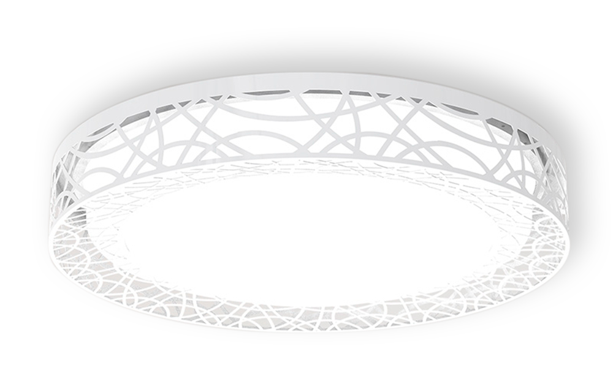
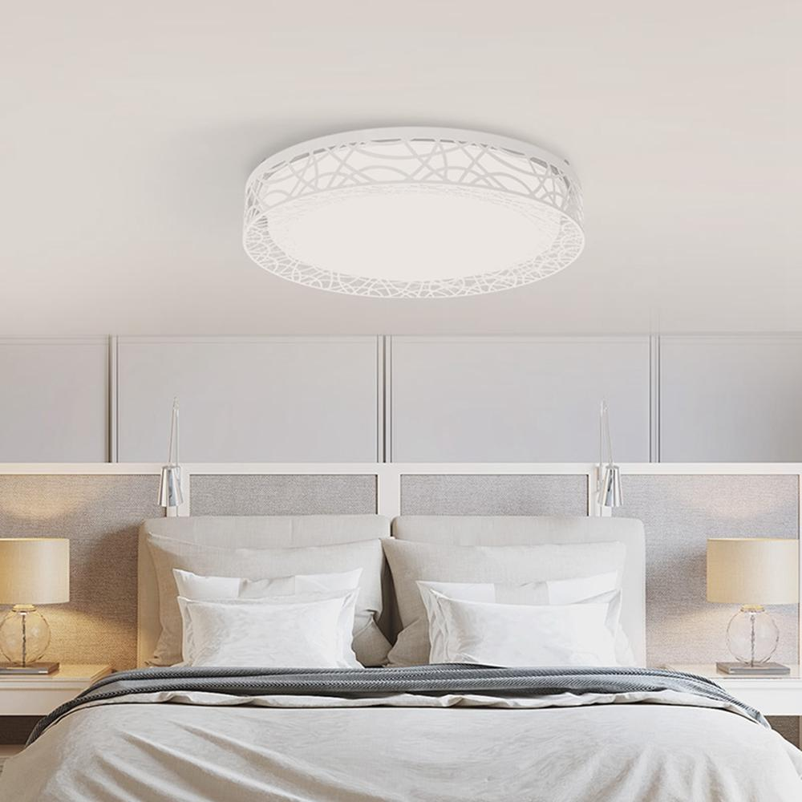
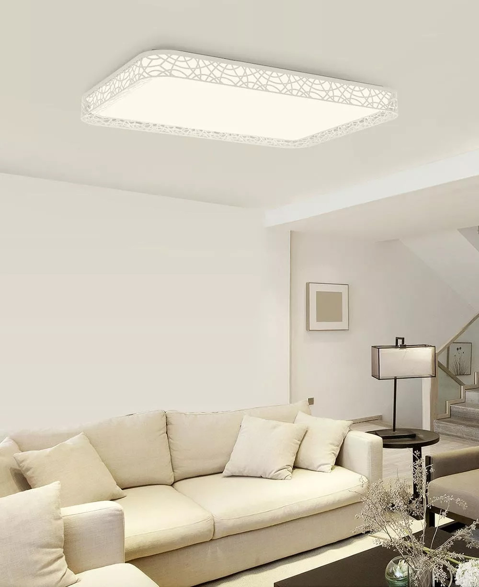
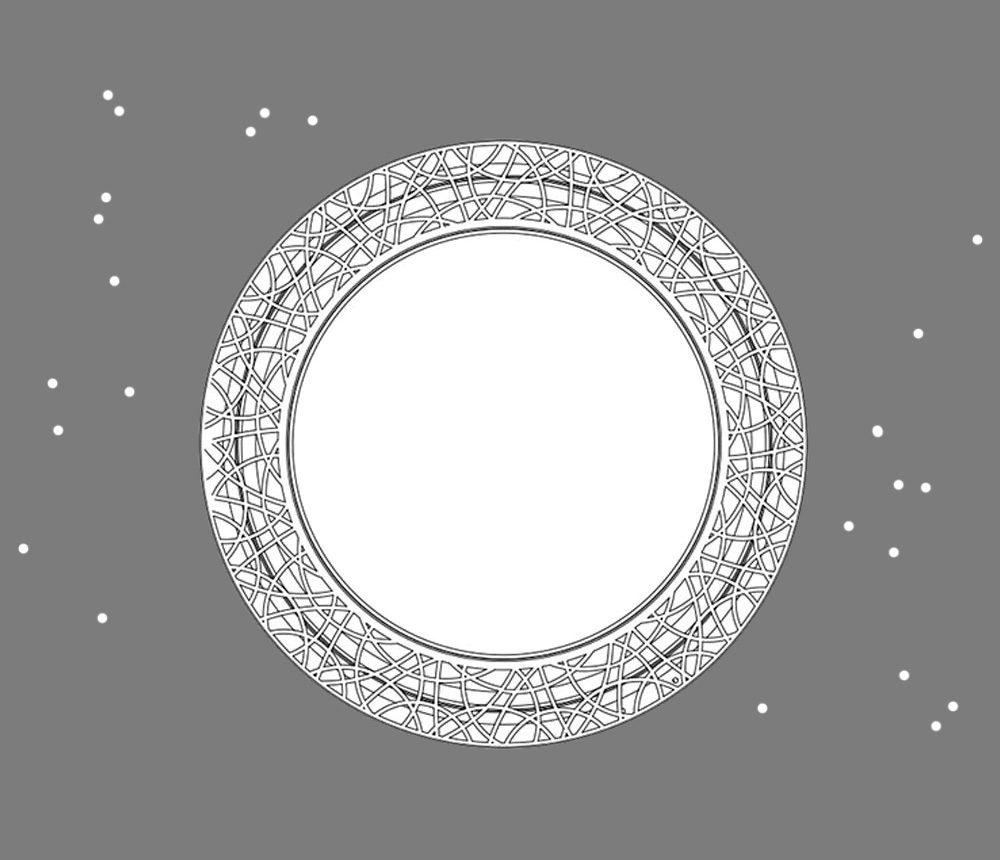

<div class="row yilai-lotus">
    <div class="col-xs-12 col-sm-12 col-md-10 col-md-offset-1 col-lg-8 col-lg-offset-2 content">
        <section class="row yilai-lotus_content_1">
            <div class="col-xs-12 col-sm-6 col-md-6 col-lg-6">
                <div class="text">
                    <h1>Yeelight Yilai Lotus Ceiling Light</h1>
                    <h2>Интелектуальное освещение с&nbsp;натуральным светом</h2>
                    <p>Регулируемая яркость и&nbsp;цветовая температура | Уникальный ажурный дизайн | Умное
                        управление смартфоном</p>
                </div>
            </div>
            <div class="col-xs-12 col-sm-6 col-md-6 col-lg-6">
                
            </div>
        </section>

        <section class="row yilai-lotus_content_2">
            <div class="col-xs-12 col-sm-12 col-md-6 col-md-push-6 col-lg-6 col-lg-push-6" style="padding: 0">
                <div class="text">
                    <h2>Простота в сочетании с&nbsp;натуральным светом</h2>
                    <p>Простой дизайн светильника в сочетании с круглой формой и белым цветом корпуса, идеально
                        вписывается в любой интерьер.</p>
                    <p>За счет 72 качественных светодиодиодов в светильнике, Yilai Lotus достигает показателя
                        цветопередачи Ra95, отражая истинные цвета предметов в помещении. Yilai Lotus поможет вам
                        видить мир таким какой он есть на самом деле.</p>
                </div>
            </div>
            <div class="col-xs-12 col-sm-12 col-md-6 col-md-pull-6 col-lg-6 col-lg-pull-6"
                style="padding: 0; font-size: 0;">
                </div>
        </section>

        <section class="row pendant_content_3">
            <div class="col-xs-12 col-sm-12 col-md-6 col-lg-6" style="padding: 0">
                <div class="text">
                    <h2>Качественные материалы</h2>
                    <p>Благодаря качественному PMMA пластику используемому в рассеивающей пластине и абажуре, свет
                        распространяется равномерно, и светильник абсолютно безопасен для использования в любых
                        помещениях — его можно вешать в спальнях, учебных комнатах, столовых, гостиницах.</p>

                    <p>Лампы Yilai Lotus доступны в двух вариантах формы — круглая и прямоугольная. Это позволяет
                        вписать их практически в любой интерьер. Выберети подходящуюю исходя из требуемой площади
                        освещения и дизайна помещения.</p>
                </div>
            </div>
            <div class="col-xs-12 col-sm-12 col-md-6 col-lg-6" style="padding: 0; font-size: 0;"></div>
        </section>

        <section class="row yilai-lotus_content_8">
            <div class="col-xs-12 col-sm-6 col-md-6 col-lg-6" style="padding: 0">
                <div class="text">
                    <h2>Несколько элементов управления</h2>
                    <p>Yeelight Yilai Lotus Ceiling Light поддерживает несколько вариантов управления. Помимо
                        традиционного
                        настенного переключателя, в вашем распоряжении пульт Bluetooth (опционально) и мобильное
                        приложени Yeelight
                        или Mi Home. Управлять светом стало легко. Синхронизируя ваш свет с помощью Google Assistant или
                        Amazon Alexa, вы можете реализовать голосовое управление яркостью и цветовой температурой.</p>
                    <ul class="function">
                        <li>
                            <span class="icon appcontrol"></span>
                            <p>Приложение</p>
                        </li>
                        <li>
                            <span class="icon swichcontrol"></span>
                            <p>Выключатель</p>
                        </li>
                        <li>
                            <span class="icon remotecontrol"></span>
                            <p>Пульт (опция)</p>
                        </li>
                    </ul>
                </div>
            </div>
            <div class="col-xs-12 col-sm-6 col-md-6 col-lg-6" style="padding: 0; font-size: 0;"></div>
        </section>

        <section class="row yilai-lotus_content_9">
            <div class="col-xs-12 col-sm-12 col-md-12 col-md-offset-1 col-lg-10 col-lg-offset-1 align-center">
                <div class="text">
                    <h2>Широкий диапазон настройки яркости и&nbsp;температуры</h2>
                    <p>Чтобы подобрать оптимальное освещение для работы или отдыха, температуру света потолочного
                        светильника Yeelight Lotus можно настраивать по своему желанию. Так же просто можно настроить и
                        яркость до комфортного уровня.</p>
                </div>
            </div>
        </section>

        <section class="row yilai-lotus_content_7">
            <div class="col-xs-12 col-sm-6 col-sm-push-6 col-md-push-6 col-md-6 col-lg-6 col-lg-push-6"
                style="padding: 0; font-size: 0;"></div>
            <div class="col-xs-12 col-sm-6 col-sm-pull-6 col-md-6 col-md-pull-6 col-lg-6 col-lg-pull-6"
                style="padding: 0">
                <div class="text">
                    <h2>Защита от пыли и&nbsp;насекомых</h2>
                    <p>Антимоскитный дизайн Yilai Lotus обеспечивает плотную герметизацию, а также предотвращает
                        попадание пыли и насекомых внутрь лампы. Благодаря этому во время уборки вы можете забыть о
                        светильнике.</p>
                </div>
            </div>
        </section>


        <section class="row nox-round_content_11">
            <div class="col-xs-12 col-sm-12 col-md-12 col-lg-12">
                
                <table class="table">
                    <thead>
                        <tr>
                            <th colspan="2">Характеристики</th>
                        </tr>
                    </thead>
                    <tbody>
                        <tr>
                            <td>Модель</td>
                            <td>YIXD07YI / YIXD06YI</td>
                        </tr>
                        <tr>
                            <td>Цвет</td>
                            <td>Белый</td>
                        </tr>
                        <tr>
                            <td>Размеры</td>
                            <td>900x630x130mm (YIXD07YI) / 430×430×120mm (YIXD06YI)</td>
                        </tr>
                        <tr>
                            <td>Вес</td>
                            <td>6.36 кг (YIXD07YI) / 1.72 кг (YIXD06YI)</td>
                        </tr>
                        <tr>
                            <td>Световой поток</td>
                            <td>Регулируемый: 6000lm (YIXD07YI) / 1600lm (YIXD06YI)</td>
                        </tr>
                        <tr>
                            <td>Цветовая температура</td>
                            <td>Регулируемая: 2700K-6500K</td>
                        </tr>
                        <tr>
                            <td>CRI</td>
                            <td>>95</td>
                        </tr>
                        <tr>
                            <td>Мощность</td>
                            <td>110W (YIXD07YI) / 34W (YIXD06YI)</td>
                        </tr>
                        <tr>
                            <td>Сеть</td>
                            <td>Wi-Fi IEEE 802.11 b/g/n 2.4GHz</td>
                        </tr>
                        <tr>
                            <td>Поддерживаемые платформы</td>
                            <td>Android 4.4 и выше / IOS 8.0 и выше</td>
                        </tr>
                        <tr>
                            <td>Управление</td>
                            <td>Голосовое, пульт (опция), приложение</td>
                        </tr>
                    </tbody>
                </table>
            </div>
        </section>
    </div>
</div>